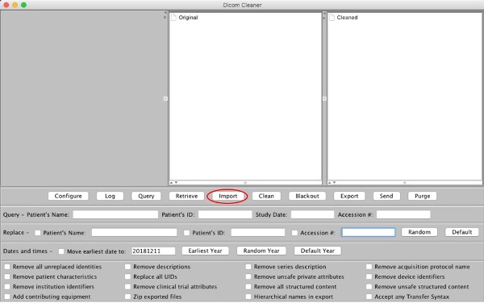
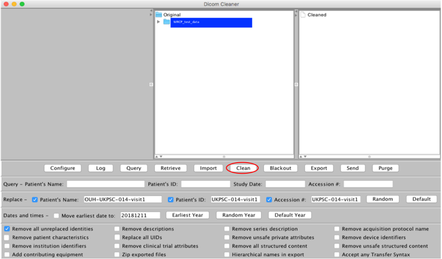
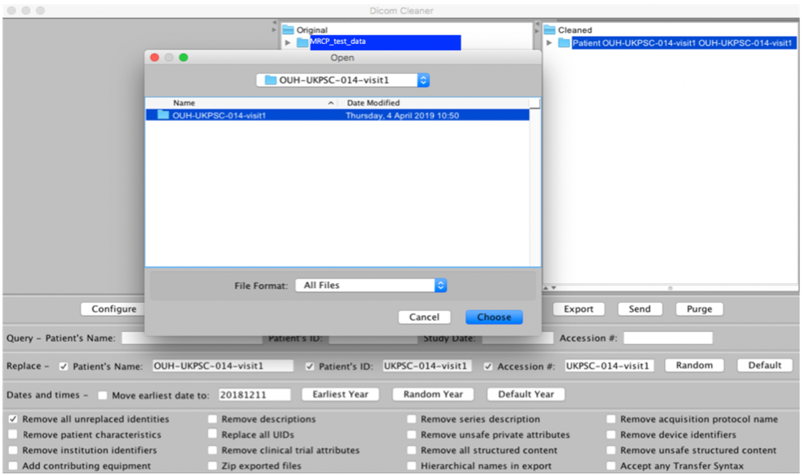

De-Identification - Offline Windows
We recommend the use of open source program such as DicomCleaner™ to de-identify data.
Follow the steps described below, to edit patient information.
Import the dataset to de-identify as shown in Figure 3, “DicomCleaner de-identification for Windows system. Import data to de-identify”
Figure 3. DicomCleaner de-identification for Windows system. Import data to de-identifyCheck Replace box
In Patient’s Name, Patient’s ID and Accession Number fields, fill in the naming convention as described in the Patient Registration section of Image Acquisition Manuals
Check Remove all unreplaced identities, and Remove patient characteristics boxes
Press Clean button as shown in Figure 4, “Fill in information according to the agreed naming convention”
Figure 4. Fill in information according to the agreed naming conventionCreate a folder with the patient information as described in the Patient Registration section in your local hard drive, select the proper patient dataset to export, press Export button, select the folder created in your local hard drive.
Press Choose and data will be exported for the correct folder as shown in Figure 5, “Export to a specific folder with de-identified data”
Figure 5. Export to a specific folder with de-identified data